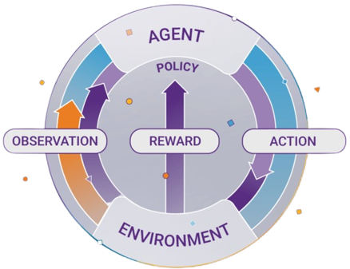

Reinforcement Learning (RL) is the science of decision making. It is about learning the optimal behavior in an environment to obtain maximum reward. This optimal behavior is learned through interactions with the environment and observations of how it responds, similar to children exploring the world around them and learning the actions that help them achieve a goal.
In the absence of a supervisor, the learner must independently discover the sequence of actions that maximize the reward. This discovery process is akin to a trial-and-error search. The quality of actions is measured by not just the immediate reward they return, but also the delayed reward they might fetch. As it can learn the actions that result in eventual success in an unseen environment without the help of a supervisor, reinforcement learning is a very powerful algorithm.
The Reinforcement Learning problem involves an agent exploring an unknown environment to achieve a goal. RL is based on the hypothesis that all goals can be described by the maximization of expected cumulative reward. The agent must learn to sense and perturb the state of the environment using its actions to derive maximal reward. The formal framework for RL borrows from the problem of optimal control of Markov Decision Processes (MDP).
A useful abstraction of the reward signal is the value function, which faithfully captures the ‘goodness’ of a state. While the reward signal represents the immediate benefit of being in a certain state, the value function captures the cumulative reward that is expected to be collected from that state on, going into the future. The objective of an RL algorithm is to discover the action policy that maximizes the average value that it can extract from every state of the system.
RL algorithms can be broadly categorized as model-free and model-based. Model-free algorithms do not build an explicit model of the environment, or more rigorously, the MDP. They are closer to trial-and-error algorithms that run experiments with the environment using actions and derive the optimal policy from it directly. Model-free algorithms are either value-based or policy-based. Value-based algorithms consider optimal policy to be a direct result of estimating the value function of every state accurately. Using a recursive relation described by the Bellman equation, the agent interacts with the environment to sample trajectories of states and rewards. Given enough trajectories, the value function of the MDP can be estimated. Once the value function is known, discovering the optimal policy is simply a matter of acting greedily with respect to the value function at every state of the process. Some popular value-based algorithms are SARSA and Q-learning. Policy-based algorithms, on the other hand, directly estimate the optimal policy without modeling the value function. By parametrizing the policy directly using learnable weights, they render the learning problem into an explicit optimization problem. Like value-based algorithms, the agent samples trajectories of states and rewards; however, this information is used to explicitly improve the policy by maximizing the average value function across all states. Popular policy-based RL algorithms include Monte Carlo policy gradient (REINFORCE) and deterministic policy gradient (DPG). Policy-based approaches suffer from a high variance which manifests as instabilities during the training process. Value-based approaches, though more stable, are not suitable to model continuous action spaces. One of the most powerful RL algorithms, called the actor-critic algorithm, is built by combining the value-based and policy-based approaches. In this algorithm, both the policy (actor) and the value function (critic) are parametrized to enable effective use of training data with stable convergence.
Any real-world problem where an agent must interact with an uncertain environment to meet a specific goal is a potential application of RL. Here are a few RL success stories:
While RL algorithms have been successful in solving complex problems in diverse simulated environments, their adoption in the real world has been slow. Here are some of the challenges that have made their uptake difficult:
Algorithms commonly used in supervised learning programs include the following: